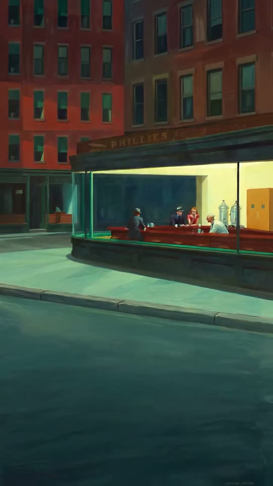

<!doctype html>
<html lang="en">
<meta charset="utf-8">
<meta name="viewport" content="width=device-width, initial-scale=1, viewport-fit=cover">
<title>Nighthawks for Blair</title>
<link rel="preconnect" href="https://fonts.googleapis.com">
<link rel="preconnect" href="https://fonts.gstatic.com" crossorigin>
<link rel="stylesheet" href="https://fonts.googleapis.com/css2?family=Bodoni+Moda:ital,opsz,wght@0,6..96,500;1,6..96,400&family=Courier+Prime&display=swap">
<style>
  /* Layout: one sticky screen; the film is the page and scroll is its playhead. Dark night palette taken from Hopper's street. */
  :root {
    --night: #0c1513;       /* the street at 2 a.m. */
    --glass: #1d3b36;       /* green diner glass */
    --fluorescent: #f1e7a8; /* the diner's yellow light */
    --brick: #b4452f;       /* the Phillies sign / woman's dress */
    --ash: #8d9a94;         /* quiet captions */
    --display: "Bodoni Moda", "Didot", "Bodoni 72", Georgia, serif;
    --mono: "Courier Prime", "Courier New", ui-monospace, monospace;
    color-scheme: dark;
  }
  html, body { background: var(--night); color: var(--fluorescent); }
  body { margin: 0; font-family: var(--mono); }

  .track { height: 700vh; position: relative; }
  .stage {
    position: sticky; top: 0;
    height: 100vh; height: 100dvh;
    display: grid; place-items: center;
    overflow: hidden;
    background: radial-gradient(ellipse at 50% 40%, var(--glass) 0%, var(--night) 62%);
  }
  .frame {
    position: relative;
    height: 100%;
    aspect-ratio: 9 / 16;
    max-width: 100%;
    container-type: size;
  }
  video, .frame img {
    position: absolute; inset: 0;
    width: 100%; height: 100%;
    object-fit: cover;
    display: block;
  }
  /* soften the film's edges into the night on wide screens */
  .frame::after {
    content: ""; position: absolute; inset: 0; pointer-events: none;
    box-shadow: inset 0 0 60px 30px var(--night);
  }
  .scrim {
    position: absolute; inset: 0; pointer-events: none;
    background: linear-gradient(to bottom, rgb(12 21 19 / .78) 0%, rgb(12 21 19 / .2) 42%, transparent 60%);
    opacity: 0; transition: opacity 1.4s ease;
  }

  .greeting {
    position: absolute; left: 0; right: 0; top: 13%;
    padding-inline: 24px;
    text-align: center;
    pointer-events: none;
  }
  .greeting .line1 {
    display: block;
    font-family: var(--display); font-style: italic; font-weight: 400;
    font-size: min(3.6rem, 6.4cqh, 11cqw);
    line-height: 1.05;
    letter-spacing: .01em;
    text-wrap: balance;
  }
  .greeting .line2 {
    display: block;
    margin-top: .2em;
    font-family: var(--display); font-weight: 500;
    font-size: min(5.6rem, 10cqh, 16cqw);
    letter-spacing: .14em;
    padding-left: .14em; /* re-centre tracked caps */
    text-transform: uppercase;
    color: var(--fluorescent);
  }
  .greeting .ch {
    display: inline-block;
    opacity: 0; transform: translateY(.35em); filter: blur(6px);
    transition: opacity .9s ease, transform 1.1s cubic-bezier(.2,.7,.2,1), filter 1.1s ease;
    transition-delay: calc(var(--i) * 45ms);
  }
  .greeting .word { display: inline-block; white-space: nowrap; }
  .greeting .ch.sp { width: .28em; }
  .sign {
    display: block; margin-top: 1.1rem;
    font-size: .78rem; letter-spacing: .32em; text-transform: uppercase;
    color: var(--ash);
    opacity: 0; transition: opacity 1.2s ease 1.6s;
  }

  .is-end .scrim { opacity: 1; }
  .is-end .greeting .ch { opacity: 1; transform: none; filter: none; }
  .is-end .greeting .line2 .ch {
    text-shadow: 0 0 18px rgb(241 231 168 / .55), 0 0 48px rgb(180 69 47 / .45);
    animation: hum 5s 1.4s infinite;
  }
  .is-end .sign { opacity: 1; }
  @keyframes hum {
    0%, 91%, 100% { opacity: 1; }
    92% { opacity: .55; } 93% { opacity: 1; } 95% { opacity: .7; } 96% { opacity: 1; }
  }

  .hint, .again, .clock {
    position: absolute; z-index: 2;
    font-size: .72rem; letter-spacing: .28em; text-transform: uppercase;
    color: var(--ash);
  }
  .hint {
    bottom: calc(28px + env(safe-area-inset-bottom, 0px)); left: 0; right: 0; text-align: center;
    transition: opacity .6s ease;
  }
  .hint::after {
    content: ""; display: block; width: 1px; height: 34px; margin: 12px auto 0;
    background: linear-gradient(var(--ash), transparent);
    animation: drip 2.2s ease-in-out infinite;
    transform-origin: top;
  }
  @keyframes drip { 0% { transform: scaleY(0); } 50% { transform: scaleY(1); } 100% { transform: scaleY(1); opacity: 0; } }
  .scrolled .hint { opacity: 0; }

  .clock {
    top: calc(20px + env(safe-area-inset-top, 0px)); left: 20px;
    font-variant-numeric: tabular-nums;
    letter-spacing: .2em;
  }
  .progress {
    position: absolute; z-index: 2; left: 0; bottom: 0; height: 2px; width: 100%;
    background: var(--brick); transform-origin: left; transform: scaleX(0);
    opacity: .8;
  }

  .again {
    bottom: calc(28px + env(safe-area-inset-bottom, 0px)); left: 50%; transform: translateX(-50%);
    background: none; border: 1px solid rgb(141 154 148 / .4); border-radius: 999px;
    font-family: var(--mono); padding: .7em 1.4em; cursor: pointer;
    opacity: 0; pointer-events: none; transition: opacity 1s ease 2.4s, color .2s, border-color .2s;
  }
  .is-end .again { opacity: 1; pointer-events: auto; }
  .again:hover, .again:focus-visible { color: var(--fluorescent); border-color: var(--fluorescent); outline: none; }

  /* the record player: tap to drop the needle */
  .deck {
    position: absolute; z-index: 3;
    right: calc(18px + env(safe-area-inset-right, 0px));
    bottom: calc(18px + env(safe-area-inset-bottom, 0px));
    width: 112px;
    display: grid; gap: 8px; justify-items: stretch;
  }
  .turntable {
    padding: 0; border: 0; background: none; cursor: pointer;
    border-radius: 8px; line-height: 0;
    filter: drop-shadow(0 8px 18px rgb(0 0 0 / .5));
  }
  .turntable:focus-visible { outline: 1px solid var(--fluorescent); outline-offset: 4px; }
  .turntable svg { width: 100%; height: auto; display: block; }
  .turntable .record {
    transform-box: fill-box; transform-origin: center;
    animation: spin 1.8s linear infinite paused; /* 33⅓ rpm */
  }
  .turntable .arm {
    transform-box: view-box; transform-origin: 101px 17px;
    transform: rotate(0deg);
    transition: transform .9s cubic-bezier(.4,.1,.2,1);
  }
  .turntable .lamp { fill: var(--glass); transition: fill .4s ease; }
  .deck.on .record { animation-play-state: running; }
  .deck.on .arm { transform: rotate(30deg); }
  .deck.on .lamp { fill: var(--fluorescent); }
  @keyframes spin { to { transform: rotate(360deg); } }

  .volume {
    display: grid; grid-template-columns: auto 1fr; align-items: center; gap: 8px;
    font-size: .62rem; letter-spacing: .24em; color: var(--ash);
  }
  .volume input {
    -webkit-appearance: none; appearance: none;
    width: 100%; min-width: 0; height: 18px; margin: 0;
    background: none; cursor: pointer;
  }
  .volume input::-webkit-slider-runnable-track { height: 1px; background: var(--ash); }
  .volume input::-moz-range-track { height: 1px; background: var(--ash); }
  .volume input::-webkit-slider-thumb {
    -webkit-appearance: none; width: 10px; height: 10px; margin-top: -4.5px;
    border-radius: 50%; background: var(--fluorescent); border: 0;
  }
  .volume input::-moz-range-thumb { width: 10px; height: 10px; border-radius: 50%; background: var(--fluorescent); border: 0; }
  .volume input:focus-visible { outline: 1px solid var(--fluorescent); outline-offset: 2px; }
  .deck-hint {
    position: absolute; right: 0; bottom: 100%; margin-bottom: 8px;
    font-size: .62rem; letter-spacing: .24em; text-transform: uppercase; white-space: nowrap;
    color: var(--ash); transition: opacity .6s ease;
  }
  .deck.played .deck-hint { opacity: 0; }

  @media (max-width: 600px) {
    .deck { width: 92px; }
    .again { left: 20px; transform: none; }
  }

  @media (prefers-reduced-motion: reduce) {
    .greeting .ch { transition: opacity .6s ease; transform: none; filter: none; }
    .is-end .greeting .line2 .ch { animation: none; }
    .hint::after { animation: none; }
    .turntable .arm { transition: none; }
  }
</style>

<main class="track" id="track">
  <section class="stage" id="stage" aria-label="Nighthawks, scrubbed by scrolling">
    <div class="frame">
      
      <video id="film" src="media/nighthawks-scrub.mp4" poster="media/poster.jpg" muted playsinline preload="auto" aria-label="An animated walk into Edward Hopper's Nighthawks"></video>
      <div class="scrim"></div>
      <h1 class="greeting" id="greeting" aria-label="Happy Birthday Blair!">
        <span class="line1" data-text="Happy Birthday"></span>
        <span class="line2" data-text="Blair!"></span>
      </h1>
    </div>
    <span class="clock" id="clock" aria-hidden="true">11:47 PM</span>
    <p class="hint">Scroll to step inside</p>
    <button class="again" id="again" type="button">Once more</button>
    <div class="progress" id="progress"></div>

    <div class="deck" id="deck">
      <span class="deck-hint" aria-hidden="true">Play the record</span>
      <button class="turntable" id="turntable" type="button" aria-pressed="false" aria-label="Play music: Midnight Ashes">
        <svg viewBox="0 0 120 96" aria-hidden="true">
          <defs>
            <linearGradient id="walnut" x1="0" y1="0" x2="1" y2="1">
              <stop offset="0" stop-color="#5a3626"/><stop offset="1" stop-color="#2c1a13"/>
            </linearGradient>
          </defs>
          <rect x="1" y="1" width="118" height="94" rx="7" fill="url(#walnut)" stroke="#8d9a94" stroke-opacity=".25"/>
          <circle cx="50" cy="48" r="41" fill="#1b1d1c"/>
          <g class="record">
            <circle cx="50" cy="48" r="38" fill="#0b0c0c"/>
            <g fill="none" stroke="#ffffff" stroke-opacity=".07" stroke-width=".6">
              <circle cx="50" cy="48" r="35"/><circle cx="50" cy="48" r="32"/><circle cx="50" cy="48" r="29.5"/>
              <circle cx="50" cy="48" r="26"/><circle cx="50" cy="48" r="23"/><circle cx="50" cy="48" r="19.5"/>
            </g>
            <circle cx="50" cy="48" r="13" fill="#b4452f"/>
            <rect x="44" y="41" width="12" height="1" fill="#f1e7a8" opacity=".7"/>
            <text x="50" y="54.5" text-anchor="middle" font-family="Courier Prime, monospace" font-size="5" fill="#f1e7a8">33⅓</text>
          </g>
          <!-- light catching the vinyl stays still while the record turns -->
          <path d="M24 26 A34 34 0 0 1 44 15" fill="none" stroke="#ffffff" stroke-opacity=".22" stroke-width="1.4" stroke-linecap="round"/>
          <path d="M76 70 A34 34 0 0 1 58 81" fill="none" stroke="#ffffff" stroke-opacity=".12" stroke-width="1.4" stroke-linecap="round"/>
          <circle cx="50" cy="48" r="1.6" fill="#8d9a94"/>
          <circle cx="101" cy="17" r="7" fill="#1b1d1c" stroke="#8d9a94" stroke-opacity=".5"/>
          <g class="arm">
            <path d="M101 17 L101 62 L96 72" fill="none" stroke="#c9cfcb" stroke-width="2" stroke-linecap="round" stroke-linejoin="round"/>
            <rect x="92" y="70" width="7" height="5" rx="1" fill="#c9cfcb" transform="rotate(-25 95.5 72.5)"/>
            <circle cx="101" cy="17" r="2.6" fill="#c9cfcb"/>
          </g>
          <circle class="lamp" cx="108" cy="84" r="2.6"/>
        </svg>
      </button>
      <label class="volume" for="volume">VOL
        <input id="volume" type="range" min="0" max="1" step="0.01" value="0.6">
      </label>
    </div>
  </section>
</main>

<script>
(() => {
  const film = document.getElementById('film');
  const stage = document.getElementById('stage');
  const track = document.getElementById('track');
  const progress = document.getElementById('progress');
  const clock = document.getElementById('clock');
  const again = document.getElementById('again');

  // split the greeting into letters for the staggered reveal
  let i = 0;
  document.querySelectorAll('#greeting [data-text]').forEach(el => {
    el.dataset.text.split(' ').forEach((word, w) => {
      if (w) el.append(' ');
      const wrap = document.createElement('span');
      wrap.className = 'word';
      wrap.setAttribute('aria-hidden', 'true');
      for (const c of word) {
        const s = document.createElement('span');
        s.className = 'ch';
        s.textContent = c;
        s.style.setProperty('--i', i++);
        wrap.appendChild(s);
      }
      el.appendChild(wrap);
    });
  });

  // The film plays across the first 86% of the scroll; the rest holds the last frame for the greeting.
  const FILM_SHARE = 0.86;
  let duration = 0, target = 0, shown = 0;

  // Load the whole file into memory so seeking is instant (and works on iOS).
  fetch(film.currentSrc || film.src)
    .then(r => r.ok ? r.blob() : Promise.reject())
    .then(b => { film.src = URL.createObjectURL(b); })
    .catch(() => {});

  film.addEventListener('loadedmetadata', () => { duration = film.duration; onScroll(); });

  function scrollProgress() {
    const max = track.offsetHeight - innerHeight;
    return max > 0 ? Math.min(1, Math.max(0, scrollY / max)) : 0;
  }

  function onScroll() {
    const p = scrollProgress();
    const f = Math.min(1, p / FILM_SHARE);
    target = f * Math.max(0, duration - 0.05);
    progress.style.transform = `scaleX(${p})`;
    document.body.classList.toggle('scrolled', p > 0.01);
    stage.classList.toggle('is-end', p > 0.93);
    // the diner clock creeps from 11:47 PM toward midnight
    const mins = 47 + Math.round(f * 13);
    clock.textContent = mins >= 60 ? '12:00 AM' : `11:${String(mins).padStart(2, '0')} PM`;
  }
  addEventListener('scroll', onScroll, { passive: true });
  addEventListener('resize', onScroll);

  // ease the playhead toward the scroll target
  (function tick() {
    if (duration) {
      shown += (target - shown) * 0.18;
      if (Math.abs(target - shown) < 0.002) shown = target;
      if (!film.seeking && Math.abs(film.currentTime - shown) > 0.015) film.currentTime = shown;
    }
    requestAnimationFrame(tick);
  })();

  // The last frame matches the first, so jumping back to the top is a seamless loop.
  again.addEventListener('click', () => {
    shown = target = 0;
    film.currentTime = 0;
    scrollTo({ top: 0, behavior: 'instant' });
  });

  // iOS needs a gesture before it will paint seeked frames
  addEventListener('touchstart', () => { film.play().then(() => film.pause()).catch(() => {}); }, { once: true, passive: true });

  onScroll();
})();

// Background music: "Midnight Ashes", looping without end, started from the record player.
(() => {
  const deck = document.getElementById('deck');
  const button = document.getElementById('turntable');
  const slider = document.getElementById('volume');
  const audio = new Audio('media/midnight-ashes.mp3');
  audio.loop = true;
  audio.preload = 'auto';

  let ctx = null, gain = null, on = false, stopTimer = 0;

  try { const v = localStorage.getItem('blair-volume'); if (v !== null) slider.value = v; } catch (e) {}

  // a squared curve sounds more even across the slider than a straight line
  const level = () => Math.pow(+slider.value, 2);

  function wire() {
    if (ctx || gain === false) return;
    try {
      ctx = new (window.AudioContext || window.webkitAudioContext)();
      gain = ctx.createGain();
      gain.gain.value = 0;
      ctx.createMediaElementSource(audio).connect(gain).connect(ctx.destination);
    } catch (e) { ctx = null; gain = false; } // fall back to the element's own volume
  }

  function fadeTo(value, seconds) {
    if (gain) {
      const g = gain.gain, now = ctx.currentTime;
      g.cancelScheduledValues(now);
      g.setValueAtTime(g.value, now);
      g.linearRampToValueAtTime(value, now + seconds);
    } else {
      audio.volume = value;
    }
  }

  function setOn(next) {
    on = next;
    deck.classList.toggle('on', on);
    button.setAttribute('aria-pressed', String(on));
    button.setAttribute('aria-label', (on ? 'Stop' : 'Play') + ' music: Midnight Ashes');
    clearTimeout(stopTimer);
    if (on) {
      deck.classList.add('played');
      wire();
      if (ctx && ctx.state === 'suspended') ctx.resume();
      if (!gain) audio.volume = 0;
      audio.play().then(() => fadeTo(level(), 1.2)).catch(() => setOn(false));
    } else {
      fadeTo(0, 0.6);
      stopTimer = setTimeout(() => audio.pause(), 650);
    }
  }

  button.addEventListener('click', () => setOn(!on));
  slider.addEventListener('input', () => {
    if (on) fadeTo(level(), 0.08);
    try { localStorage.setItem('blair-volume', slider.value); } catch (e) {}
  });
})();
</script>
